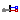
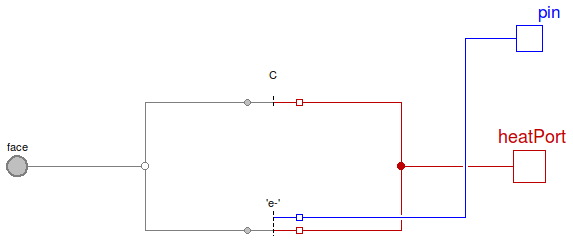
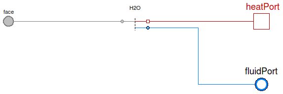

Table of Contents
- User's Guide
- BCs
- Sensors
- Assemblies**
- Regions**
- Subregions
- Connectors
- Characteristics
- Units
- Quantities
- BaseClasses
- **Please check back soon or contact kdavies4 at gmail.com.
Download
- Latest: FCSys-2.0.zip (**Check back soon.)

| Name | Description |
|---|---|
| AnodeGas | Adapter for PEMFC Anode gas between FCSys and Modelica |
| CathodeGas | Adapter for PEMFC cathode gas between FCSys and Modelica |
|  Graphite | Adapter for graphite between FCSys and Modelica |
| Adapter for liquid between FCSys and Modelica | |
| Base classes (not for direct use) |
 FCSys.BCs.Adapters.Phases.AnodeGas
FCSys.BCs.Adapters.Phases.AnodeGas

| Type | Name | Description |
|---|---|---|
| HeatPort_b | heatPort | Modelica heat port |
| FaceBus | face | FCSys face connector |
| FluidPort_b | fluidPort | Modelica fluid port |
model AnodeGas "Adapter for PEMFC Anode gas between FCSys and Modelica" extends BaseClasses.PartialPhase; replaceable package Medium = Media.AnodeGas constrainedby Modelica.Media.Interfaces.PartialMedium "Medium model (Modelica)";Species.FluidNonionic H2(redeclare package Medium = Modelica.Media.IdealGases.SingleGases.H2 (referenceChoice=Modelica.Media.Interfaces.PartialMedium.Choices.ReferenceEnthalpy.ZeroAt25C, excludeEnthalpyOfFormation=false), redeclare package Data = FCSys.Characteristics.H2.Gas); Species.FluidNonionic H2O(redeclare package Data = FCSys.Characteristics.H2O.Gas (referenceChoice=Modelica.Media.Interfaces.PartialMedium.Choices.ReferenceEnthalpy.ZeroAt25C, excludeEnthalpyOfFormation=false), redeclare final package Medium = Modelica.Media.IdealGases.SingleGases.H2O); Junctions.Junction2 junction; Modelica.Fluid.Interfaces.FluidPort_b fluidPort(redeclare final package Medium = Medium) "Modelica fluid port"; equation // H2connect(H2.face.material, face.H2.material); connect(H2.face.thermal, face.H2.thermal); connect(H2.heatPort, heatPort); connect(H2.fluidPort, junction.purePort1); // H2Oconnect(H2O.face.material, face.H2O.material); connect(H2O.face.thermal, face.H2O.thermal); connect(H2O.heatPort, heatPort); connect(H2O.fluidPort, junction.purePort2); // Mixtureconnect(junction.mixturePort, fluidPort); end AnodeGas;
FCSys.BCs.Adapters.Phases.CathodeGas

| Type | Name | Description |
|---|---|---|
| HeatPort_b | heatPort | Modelica heat port |
| FaceBus | face | FCSys face connector |
| FluidPort_b | fluidPort | Modelica fluid port |
model CathodeGas "Adapter for PEMFC cathode gas between FCSys and Modelica" extends BaseClasses.PartialPhase; replaceable package Medium = Media.CathodeGas constrainedby Modelica.Media.Interfaces.PartialMedium "Medium model (Modelica)";Junctions.Junction3 junction( redeclare package Medium1 = Modelica.Media.IdealGases.SingleGases.H2O ( referenceChoice=Modelica.Media.Interfaces.PartialMedium.Choices.ReferenceEnthalpy.ZeroAt25C, excludeEnthalpyOfFormation=false), redeclare package Medium2 = Modelica.Media.IdealGases.SingleGases.N2 ( referenceChoice=Modelica.Media.Interfaces.PartialMedium.Choices.ReferenceEnthalpy.ZeroAt25C, excludeEnthalpyOfFormation=false), redeclare package Medium3 = Modelica.Media.IdealGases.SingleGases.O2 ( referenceChoice=Modelica.Media.Interfaces.PartialMedium.Choices.ReferenceEnthalpy.ZeroAt25C, excludeEnthalpyOfFormation=false), redeclare package MixtureMedium = Medium); Species.FluidNonionic H2O(redeclare package Data = FCSys.Characteristics.H2O.Gas, redeclare final package Medium = Modelica.Media.IdealGases.SingleGases.H2O (referenceChoice=Modelica.Media.Interfaces.PartialMedium.Choices.ReferenceEnthalpy.ZeroAt25C, excludeEnthalpyOfFormation=false)); Species.FluidNonionic N2(redeclare package Data = FCSys.Characteristics.N2.Gas, redeclare final package Medium = Modelica.Media.IdealGases.SingleGases.N2 (referenceChoice=Modelica.Media.Interfaces.PartialMedium.Choices.ReferenceEnthalpy.ZeroAt25C, excludeEnthalpyOfFormation=false)); Species.FluidNonionic O2(redeclare package Data = FCSys.Characteristics.O2.Gas, redeclare final package Medium = Modelica.Media.IdealGases.SingleGases.O2 (referenceChoice=Modelica.Media.Interfaces.PartialMedium.Choices.ReferenceEnthalpy.ZeroAt25C, excludeEnthalpyOfFormation=false)); Modelica.Fluid.Interfaces.FluidPort_b fluidPort(redeclare final package Medium = Medium) "Modelica fluid port"; equation // H2Oconnect(H2O.face.material, face.H2O.material); connect(H2O.face.thermal, face.H2O.thermal); connect(H2O.fluidPort, junction.purePort1); connect(H2O.heatPort, heatPort); // N2connect(N2.face.material, face.N2.material); connect(N2.face.thermal, face.N2.thermal); connect(N2.fluidPort, junction.purePort2); connect(N2.heatPort, heatPort); // O2connect(O2.face.material, face.O2.material); connect(O2.face.thermal, face.O2.thermal); connect(O2.fluidPort, junction.purePort3); connect(O2.heatPort, heatPort); // Mixtureconnect(junction.mixturePort, fluidPort); end CathodeGas;
 FCSys.BCs.Adapters.Phases.Graphite
FCSys.BCs.Adapters.Phases.Graphite
| Type | Name | Description |
|---|---|---|
| HeatPort_b | heatPort | Modelica heat port |
| FaceBus | face | FCSys face connector |
| NegativePin | pin | Modelica electrical pin |
model Graphite "Adapter for graphite between FCSys and Modelica" extends BaseClasses.PartialPhase;Species.'e-' 'e-'(redeclare package Data = FCSys.Characteristics.'e-'.Graphite); Species.Solid C(redeclare package Data = FCSys.Characteristics.C.Graphite); Modelica.Electrical.Analog.Interfaces.NegativePin pin "Modelica electrical pin"; equation // Cconnect(C.face.thermal, face.C.thermal); connect(C.heatPort, heatPort); // e-connect('e-'.face.material, face.'e-'.material); connect('e-'.face.thermal, face.'e-'.thermal); connect('e-'.heatPort, heatPort); connect('e-'.pin, pin); end Graphite;

| Type | Name | Description |
|---|---|---|
| HeatPort_b | heatPort | Modelica heat port |
| FaceBus | face | FCSys face connector |
| FluidPort_b | fluidPort | Modelica fluid port |
model Liquid "Adapter for liquid between FCSys and Modelica" extends BaseClasses.PartialPhase; replaceable package Medium = Modelica.Media.Water.ConstantPropertyLiquidWater constrainedby Modelica.Media.Interfaces.PartialPureSubstance "Medium model (Modelica)";Species.FluidNonionic H2O(redeclare package Data = FCSys.Characteristics.H2O.Liquid, redeclare final package Medium = Medium); Modelica.Fluid.Interfaces.FluidPort_b fluidPort(redeclare final package Medium = Medium) "Modelica fluid port"; // Note: In Dymola 7.4, "redeclare final package Medium = Medium" // must be used instead of "redeclare final Medium Medium" in // order for this model to pass its check. equation // H2Oconnect(H2O.face.material, face.H2.material); connect(H2O.face.thermal, face.H2.thermal); connect(H2O.heatPort, heatPort); connect(H2O.fluidPort, fluidPort); end Liquid;